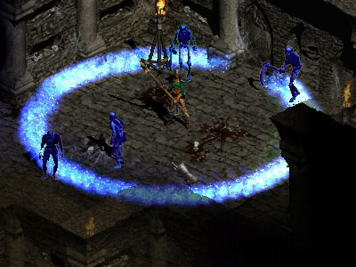

⚡ 切換至電系新星 (Nova) 工作台
❄️ D2 Frost Nova (冰霜新星) 逆向分析與方向間距除錯工作台
遵循 suggestions/Oelenova.txt 規範：冰霜新星 16 方向檢視、等弧長 8px 取樣、動態間距指標與官方大圖對照
🔍 冰晶方向切片檢視器 (Direction Inspector)
選取方向 (0~15):
影格 Scrubber (0~13):
F4
DCC 索引:
Row 7
標準方位:
0.0° (E)
切片單元寬高:
100×70 px
錨點 Pivot:
50, 35
📊 實機指標與健康度 (Health Metrics)
冰晶數量 (Count):
-
橢圓周長 (Perimeter):
-
最小間距 (Min Spacing):
-
最大間距 (Max Spacing):
-
平均間距 (Avg Spacing):
-
最大裂縫 (Visible Gap):
-
❄️ 冰霜新星即時合成畫布 (Frost Nova Simulator)
圖集載入中...
▶ 播放動畫
⏮ 上一幀
⏭ 下一幀
Frame: 4 / 13
⚙️ 演算法與幾何參數 (Algorithm Config)
取樣策略 (Mode):
✨ 模式 2: 等弧長 LUT 動態取樣 (8px 鎖定)
🎯 模式 1: 原廠 64 顆固定冰霜子體
⚠️ 模式 3: 舊版等角度步進 (缺陷對照)
擴散半徑 R (px):
130
目標相鄰間距 (px):
8
等軸測 Y 比率:
0.54
光帶層數:
單層冰晶 (清澈原版)
雙層冰霜熔接 (外R + 內R-6px, 冰霜實心核)
🛠️ 輔助視覺標記 (Debug Overlays)
顯示等軸測參考幾何線
顯示圖元取樣中心點
顯示 DCC 方向標籤
顯示圖元包圍盒 (BBox)
🖼️ 官方真理對照圖 (Ground Truth)

frost_nova_crop.png (暴雪官方原圖)